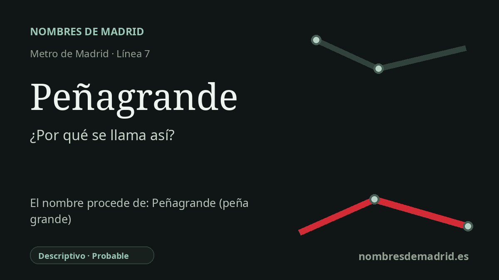

Publicado el · Investigación de Nombres de Madrid · Cómo verificamos cada origen · 9 fuentes consultadas
Respuesta rápida
La estación de Peñagrande toma su nombre del barrio madrileño al que da servicio. El topónimo es descriptivo: peña significa piedra grande natural o cerro peñascoso, y grande indica gran tamaño.
La historia del nombre
La estación de Peñagrande toma su nombre del barrio de Peñagrande, en Fuencarral-El Pardo, y no de una persona. El nombre es un topónimo descriptivo muy transparente: en español, *peña* es una piedra grande natural o un cerro peñascoso, y *grande* indica gran tamaño. En la explicación pública, la lectura más prudente es por tanto “peña grande”, “gran roca natural” o “cerro rocoso grande”.
El topónimo pertenece a un paisaje del noroeste madrileño que antes de la expansión urbana del siglo XX seguía siendo semirrural. Las crónicas locales describen, a finales del siglo XIX, lomas, cultivos de secano, caminos, casas de labor y arroyos en el entorno del actual Peñagrande. Una reseña cartográfica antigua sitúa la Casa de Beacos donde hoy está Peñagrande, lo que indica que el nombre moderno del barrio no fue siempre la etiqueta principal en los planos.
La colonia urbana asociada al barrio nació en septiembre de 1914 con el nombre de Colonia El Porvenir-Fuente la Mina. La investigación de historia local señala que Peñagrande se añadió al nombre de la colonia en 1919, y que en los años veinte la zona ya contaba con capilla-escuela, asociación de propietarios y proyectos de conexión. El primer tranvía llegó a Peñagrande el 5 de agosto de 1932, muchas décadas antes que el Metro.
La estación actual de Metro abrió el 29 de marzo de 1999 dentro de la prolongación de la línea 7 entre Valdezarza y Pitis. La documentación regional de transporte explica que esta actuación dio acceso directo al Metro a Valdezarza, El Pilar, Peñagrande, Lacoma y Arroyo Fresno, y sitúa la estación de Peñagrande en el entorno de la Vereda de Ganapanes. El CRTM la recoge hoy como estación de la línea 7, en zona tarifaria A y con accesos accesibles en Camino de Ganapanes.
La principal corrección es de grado de prueba, no de significado. El sentido literal del nombre está bien respaldado, pero las fuentes disponibles no demuestran la tradición concreta de que una roca determinada sirviera durante siglos como hito para pastores y vecinos. Mientras no aparezca un plano, documento catastral, expediente municipal o texto local antiguo que identifique ese elemento, conviene presentar la etimología como topónimo descriptivo y no como una historia de hito plenamente documentada.